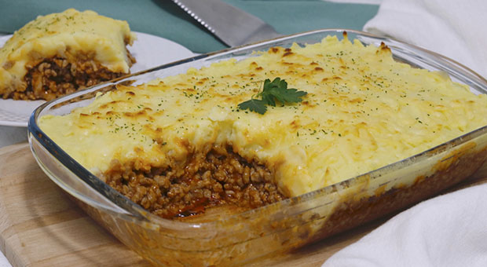
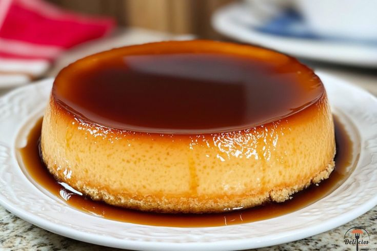

Pastel de papa

Ingredientes
- 1kg de papa
- 1/2 kilo de carne picada
- 1 cebolla
- 1/2 pimenton rojo
- 2 dientes de ajo
- Aceite a gusto
- sal a gusto
Preparacion
- Cortar las papas en cubos y hervirlas con sal.
- Picar la cebolla, el ajo y el pimiento morrón.
- Calentar el aceite y sofreír la cebolla, el pimiento y los ajos.
- Cuando la cebolla está transparente, agregar la carne molida de cerdo y sofreír mientras se mezcla con una cuchara.
- Salpimentar, agregar ajo en polvo, pimentón y cocinar la carne 15min.
- Poner en una fuente para horno una base de puré, agregar por encima la carne (dejar que se entibie un poco) y colocar otra capa de puré. Para distribuirlo mejor, se moja la cuchara con agua fría.
- Llevar a horno fuerte o gratinador unos 15-20 min. o hasta que la parte de arriba esté crocante.
Flan Casero

Ingredientes
- 5 huevos
- 500 ml de leche
- 200 g de azúcar (100 g para el flan y 100 g para el caramelo)
- 1 cucharada de agua caliente (para el caramelo)
Preparacion
- Preparar la mezcla del flan: Cascar los 5 huevos en un bol. Agregar 100g de azúcar y batir suavemente hasta romper el ligue, sin incorporar aire. Añadir 500g de leche y mezclar con un tenedor o batidor de mano hasta integrar. No espumar.
- Preparar el caramelo: Colocar una sartén limpia a fuego medio y agregar los 100g de azúcar. Cocinar sin remover al inicio hasta que empiece a derretirse, luego revolver con cuchara de madera hasta obtener un color marrón claro.
- Retirar del fuego y añadir con cuidado 1 cucharada de agua caliente, mezclando rápidamente hasta lograr una textura más fluida.
- Armar el molde: Verter el caramelo dentro de una flanera y mover para cubrir fondo y bordes. Si se desea un flan bien liso, colar la mezcla antes de volcarla sobre el caramelo.
- Cocinar a baño maría: Colocar la flanera dentro de una fuente más grande. Verter agua caliente hasta cubrir la mitad de la altura del molde.
- Cubrir con papel aluminio y hornear a 160 °C durante 50–60 minutos, hasta que el flan esté firme en los bordes y ligeramente tembloroso en el centro.
- Enfriar y desmoldar: Retirar del horno, dejar enfriar a temperatura ambiente y luego llevar a la heladera por al menos 3–4 horas.